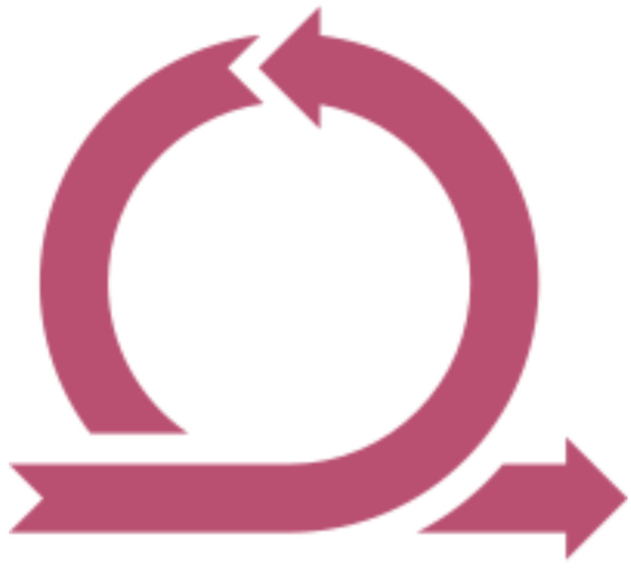

<mat-drawer-container class="lm-navbar__container" autosize role="navigation">
	<mat-drawer
		class="lm-navbar__drawer"
		#drawer
		class="lm-navbar__sidenav"
		mode="over"
	>
		<div class="lm-navbar__drawer-content">
			

			<!--                    Links for drawer                    -->
			<div>
				<a
					*ngFor="let item of links"
					class="lm-navbar__drawer-item"
					(click)="drawer.toggle()"
					routerLink="{{ item.link }}"
					[routerLinkActive]="'lm-navbar__drawer-item--active'"
					>{{ item.text }}</a
				>
			</div>

			<div>
				<app-user-profile-footer
					(click)="drawer.toggle()"
				></app-user-profile-footer>
			</div>
		</div>
	</mat-drawer>

	<div class="lm-navbar__container--sticky" role="heading">
		<div class="lm-navbar__title-section">
			<mat-icon
				class="lm-navbar__icon lm-navbar__item"
				(click)="drawer.toggle()"
				>menu</mat-icon
			>
			<span>
				<app-page-header-title>
					<span class="lm-navbar__title" id="sectionTitle">
						{{ _title }}
					</span>
				</app-page-header-title>
			</span>
		</div>

		
		<div class="lm-navbar__links--desktop-view lm-navbar__item">
			<!--                    Links for Bigger Screens                    -->
			<a
				*ngFor="let item of links"
				class="lm-navbar__drawer-item"
				routerLink="{{ item.link }}"
				[routerLinkActive]="'lm-navbar__drawer-item--active'"
				>{{ item.text }}</a
			>
		</div>
	</div>
	<div class="lm-content__container">
		<ng-content select="router-outlet"></ng-content>
	</div>
</mat-drawer-container>
